Postharvest
This essay shows the postharvest behavior of the fruits at temperatures of 5 and 9 °C for different physical and chemical variables.
Introduction
Fruit and vegetable losses between harvest times and their potential consumption are considerable. Specifically, fresh fruits are living tissues that acquire an independent life once harvested. Minimizing these losses depends on biological factors such as the species or variety, the plant organ, associated pathologies, harvest time, relative moisture content and, in the specific case of the fruits, whether they are climacteric or not, among many others. The decrease or lethargy of physiological, physical and pathological processes are essential to achieve a longer lifespan. The knowledge of the production of ethylene and carbon dioxide through postharvest respiration is essential to determine whether the fruits show climacteric behavior or not. Through respiration, they use their metabolic reserves accumulated during the growth and maturation phase and can give continuity to the synthesis processes necessary for their survival. However, the loss of these food reserves also means accelerated senescence and decreased product shelf life. In turn, environmental factors such as temperature, humidity or radiation combined with the aforementioned factors determine the best or worst state of conservation. Thus, the decrease in the temperature of the product and the reduction in the time in which the optimum storage temperature is reached play an essential role, since they are the factors that most influence the decrease in these processes that affect the reactions and chemical composition. as well as physical integrity.
The fruit of H. edulis would have great potential as a functional food due to its compositional profile and outstanding nutritional value that is very favorable for health. However, there are few antecedents regarding the postharvest behavior of the fruits and forms of storage, essential knowledge when thinking about the use of these fruits both as fresh products and in processed products.
From the application of postharvest technologies it is possible to describe, understand and execute treatments that avoid major losses and preserve the quality of the nutritional profile and the desired sensory aspects to be accepted by consumers.
Goals
Evaluate the physical characteristics of the fruits at different times and storage conditions.
Evaluate the chemical characteristics of the fruits at different times and storage conditions: soluble solids-titratable acidity, ethylene.
Define the most appropriate preservation method for these fruits and their characterization as functional food.
Complete analysis of the essay:
WEIGHT
Descriptive statistics
Boxplot
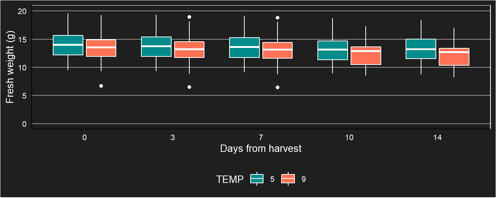
With standard deviation
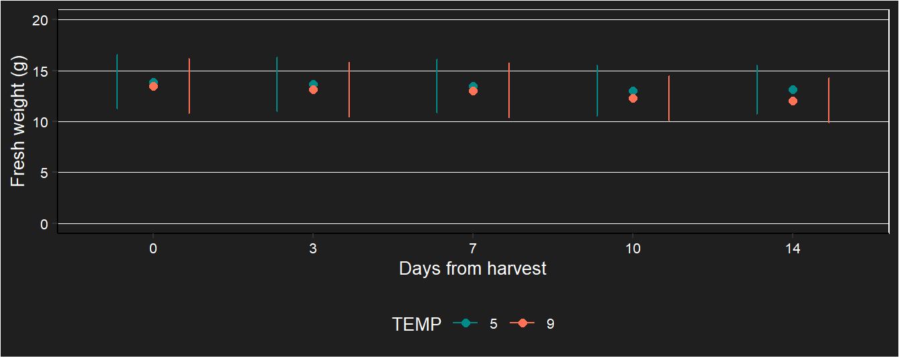
Profile chart
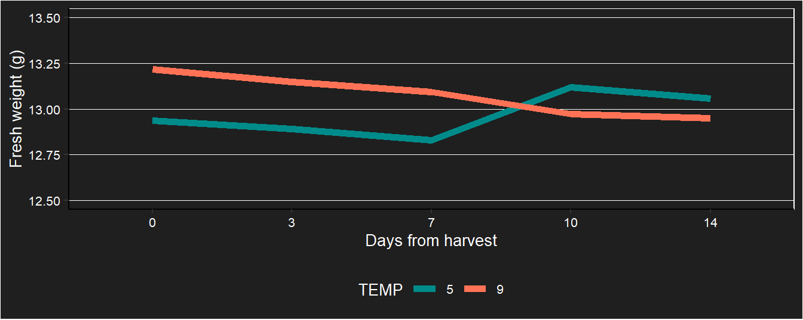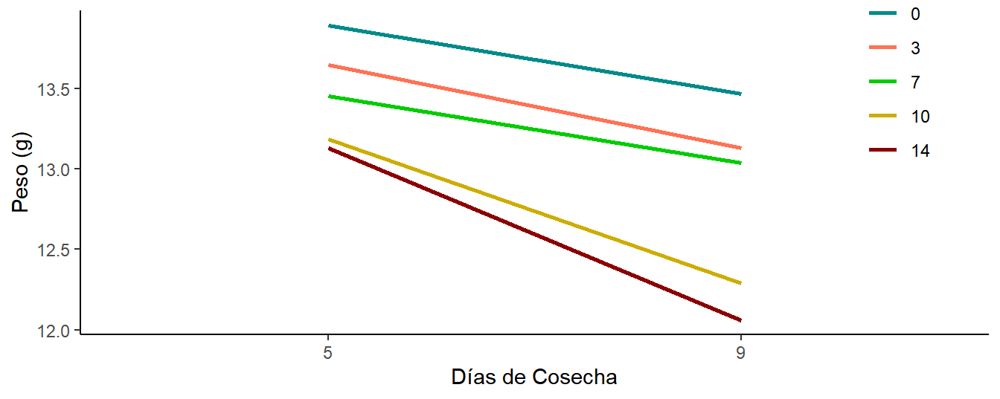
Behavior by fruit
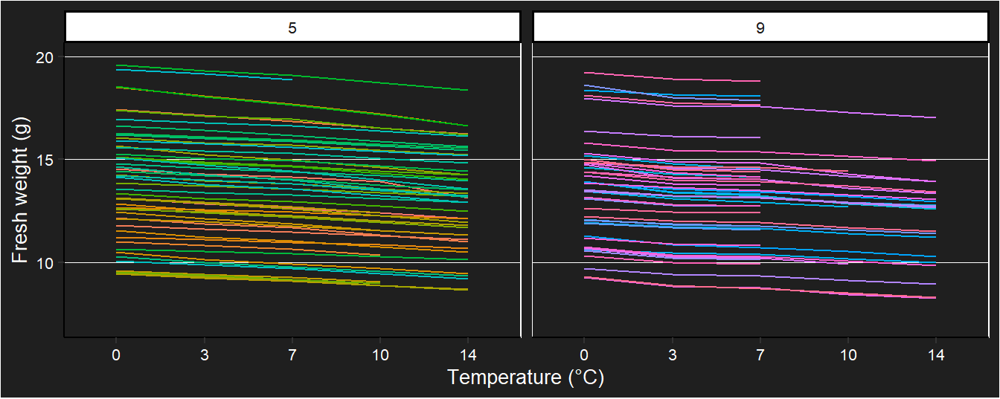
Inferential statistics WEIGHT
Correlation over time
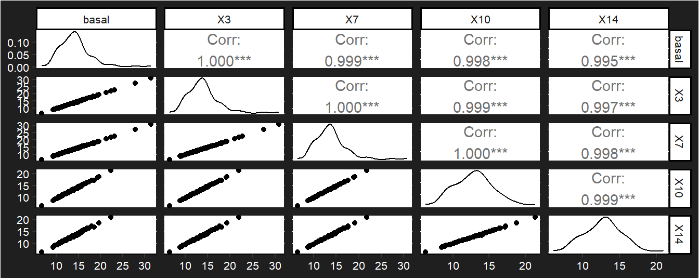
Selection of models by AIC
## df AIC
## m1p 12 138.314
## m2p 13 127.062
## m3p 12 -136.992
## m4p 13 -136.484
## m5p 21 -270.309
## m6p 12 138.314The m5p model is the best in terms of AIC
Assumptions
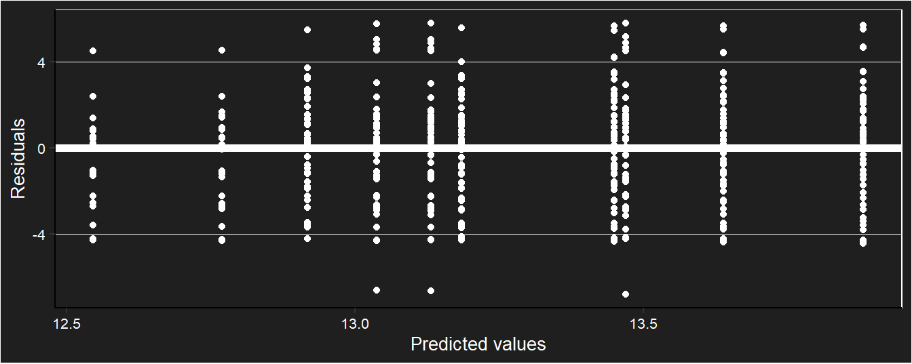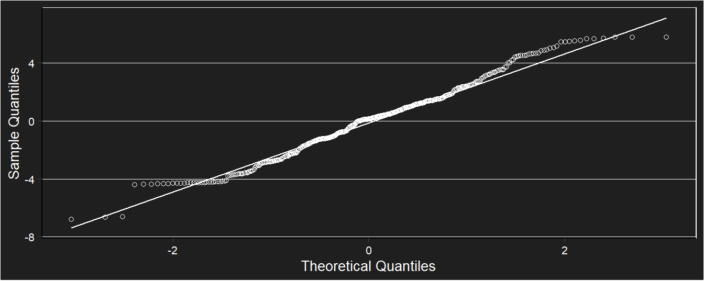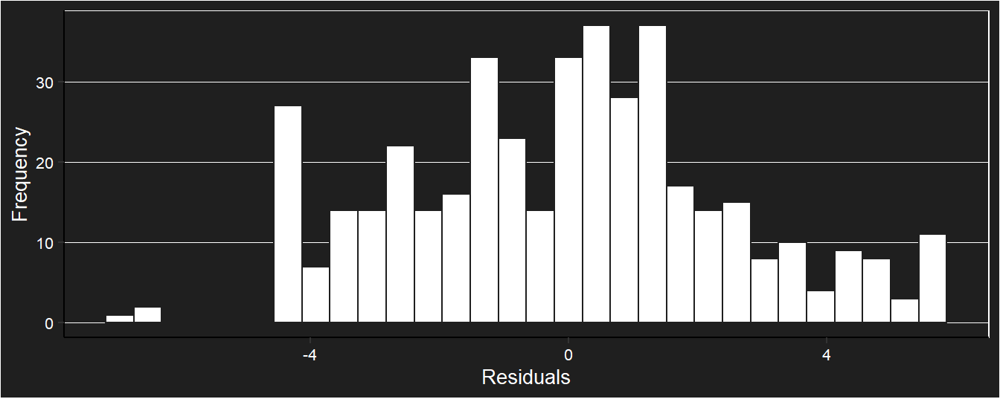
##
## Shapiro-Wilk normality test
##
## data: m5p$residuals
## W = 0.9866, p-value = 0.00063Marginal covariance matrix
## Marginal variance covariance matrix
## [,1] [,2] [,3] [,4] [,5]
## [1,] 6.8445 6.8392 6.8341 6.8217 6.8024
## [2,] 6.8392 6.8445 6.8428 6.8367 6.8231
## [3,] 6.8341 6.8428 6.8445 6.8409 6.8303
## [4,] 6.8217 6.8367 6.8409 6.8445 6.8390
## [5,] 6.8024 6.8231 6.8303 6.8390 6.8445
## Standard Deviations: 2.6162 2.6162 2.6162 2.6162 2.6162Anova type III
## Analysis of Deviance Table (Type III tests)
##
## Response: PESO
## Df Chisq Pr(>Chisq)
## (Intercept) 1 1407.937 <2e-16 ***
## TEMP 1 0.586 0.444
## DIA 4 726.465 <2e-16 ***
## TEMP:DIA 4 176.771 <2e-16 ***
## ---
## Signif. codes: 0 '***' 0.001 '**' 0.01 '*' 0.05 '.' 0.1 ' ' 1There is interaction Time * Temperature. Interaction comparisons are made and simple effects are analyzed.
Interaction comparisons
## contrast estimate SE df t.ratio p.value
## 5 0 - 9 0 0.411437 0.537539 400 0.765 0.9990
## 5 0 - 5 3 0.241910 0.014463 400 16.726 <.0001
## 5 0 - 9 3 0.749259 0.537539 400 1.394 0.9287
## 5 0 - 5 7 0.432372 0.020150 400 21.458 <.0001
## 5 0 - 9 7 0.843859 0.537539 400 1.570 0.8619
## 5 0 - 5 10 0.696172 0.029708 400 23.434 <.0001
## 5 0 - 9 10 1.112269 0.537597 400 2.069 0.5506
## 5 0 - 5 14 0.963241 0.040068 400 24.040 <.0001
## 5 0 - 9 14 1.334814 0.537823 400 2.482 0.2814
## 9 0 - 5 3 -0.169527 0.537559 400 -0.315 1.0000
## 9 0 - 9 3 0.337822 0.015377 400 21.970 <.0001
## 9 0 - 5 7 0.020935 0.537566 400 0.039 1.0000
## 9 0 - 9 7 0.432422 0.021455 400 20.155 <.0001
## 9 0 - 5 10 0.284735 0.537580 400 0.530 1.0000
## 9 0 - 9 10 0.700833 0.032802 400 21.366 <.0001
## 9 0 - 5 14 0.551804 0.537593 400 1.026 0.9905
## 9 0 - 9 14 0.923377 0.046625 400 19.805 <.0001
## 5 3 - 9 3 0.507349 0.537559 400 0.944 0.9949
## 5 3 - 5 7 0.190462 0.008288 400 22.980 <.0001
## 5 3 - 9 7 0.601949 0.537559 400 1.120 0.9825
## 5 3 - 5 10 0.454262 0.017364 400 26.161 <.0001
## 5 3 - 9 10 0.870360 0.537616 400 1.619 0.8384
## 5 3 - 5 14 0.721331 0.028554 400 25.262 <.0001
## 5 3 - 9 14 1.092904 0.537842 400 2.032 0.5769
## 9 3 - 5 7 -0.316887 0.537566 400 -0.589 0.9999
## 9 3 - 9 7 0.094600 0.008796 400 10.754 <.0001
## 9 3 - 5 10 -0.053087 0.537580 400 -0.099 1.0000
## 9 3 - 9 10 0.363011 0.020250 400 17.926 <.0001
## 9 3 - 5 14 0.213982 0.537593 400 0.398 1.0000
## 9 3 - 9 14 0.585555 0.035439 400 16.523 <.0001
## 5 7 - 9 7 0.411487 0.537566 400 0.765 0.9990
## 5 7 - 5 10 0.263800 0.011699 400 22.550 <.0001
## 5 7 - 9 10 0.679897 0.537624 400 1.265 0.9608
## 5 7 - 5 14 0.530868 0.023326 400 22.758 <.0001
## 5 7 - 9 14 0.902442 0.537849 400 1.678 0.8074
## 9 7 - 5 10 -0.147687 0.537580 400 -0.275 1.0000
## 9 7 - 9 10 0.268411 0.014829 400 18.101 <.0001
## 9 7 - 5 14 0.119382 0.537593 400 0.222 1.0000
## 9 7 - 9 14 0.490955 0.030615 400 16.036 <.0001
## 5 10 - 9 10 0.416097 0.537637 400 0.774 0.9989
## 5 10 - 5 14 0.267068 0.015004 400 17.799 <.0001
## 5 10 - 9 14 0.638642 0.537863 400 1.187 0.9740
## 9 10 - 5 14 -0.149029 0.537650 400 -0.277 1.0000
## 9 10 - 9 14 0.222545 0.020742 400 10.729 <.0001
## 5 14 - 9 14 0.371574 0.537876 400 0.691 0.9996
##
## Degrees-of-freedom method: df.error
## P value adjustment: tukey method for comparing a family of 10 estimatesSignificant differences are given by days.
Plot with standard error of the model by treatment.

Simple effects
## DIA = 0:
## contrast estimate SE df t.ratio p.value
## 5 - 9 0.411437 0.537539 400 0.765 0.4445
##
## DIA = 3:
## contrast estimate SE df t.ratio p.value
## 5 - 9 0.507349 0.537559 400 0.944 0.3458
##
## DIA = 7:
## contrast estimate SE df t.ratio p.value
## 5 - 9 0.411487 0.537566 400 0.765 0.4444
##
## DIA = 10:
## contrast estimate SE df t.ratio p.value
## 5 - 9 0.416097 0.537637 400 0.774 0.4394
##
## DIA = 14:
## contrast estimate SE df t.ratio p.value
## 5 - 9 0.371574 0.537876 400 0.691 0.4901
##
## Degrees-of-freedom method: df.error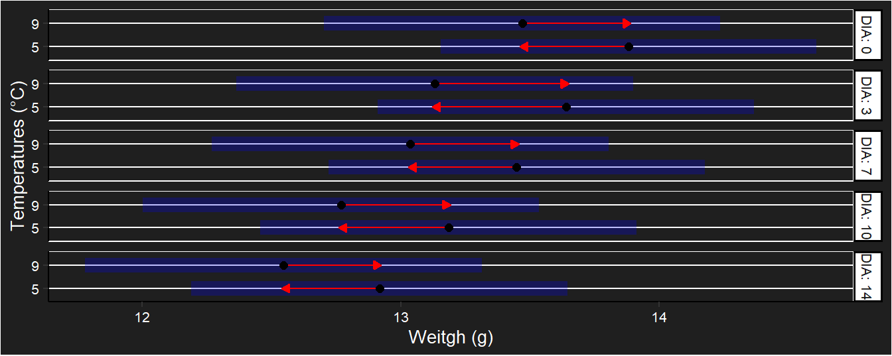
Conclusion Weigth
NO significant differences were found between temperatures. There is no significant evidence to infer that a temperature of 5°C decreases weight loss.
COLOR (*L)
Descriptive statistics *L
Boxplot
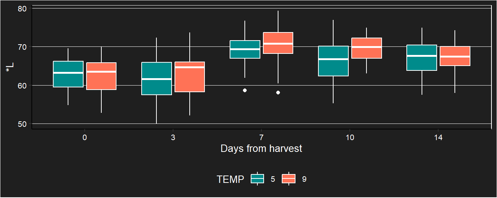
Graph with standard deviation
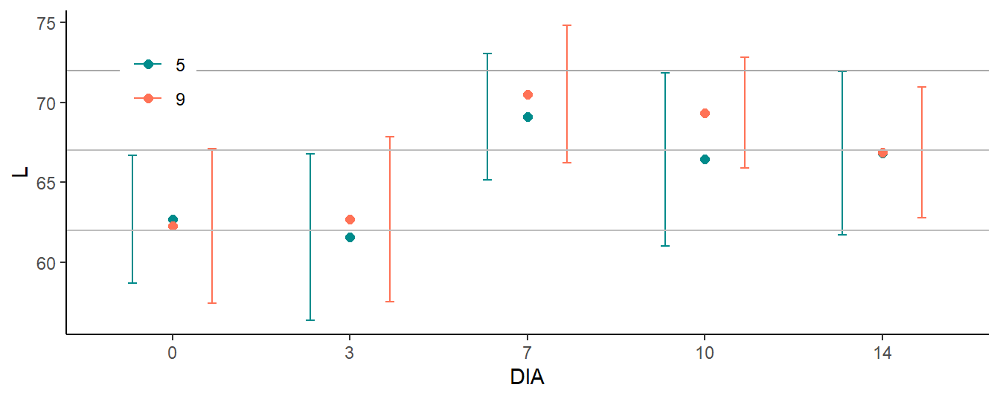
Profile chart
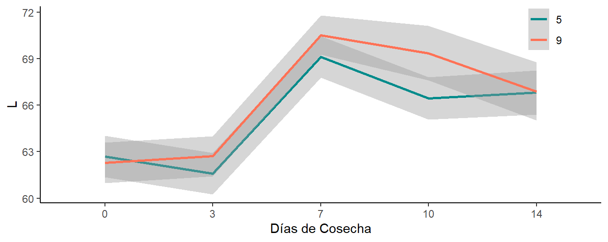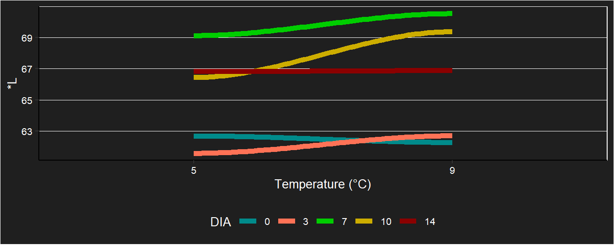
Behavior by fruit
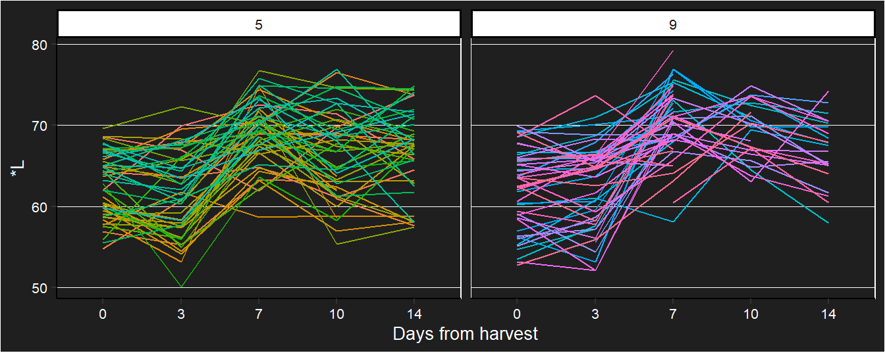
Inferential statistics *L
Correlation over time
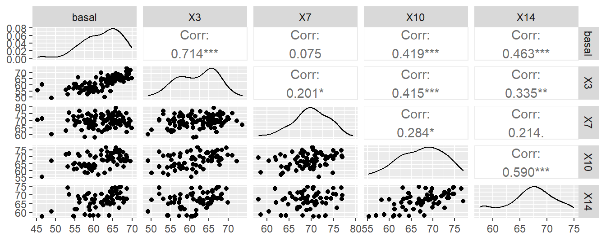
Selection of models by AIC
## df AIC
## m1L 12 2510.28
## m2L 16 2514.87
## m3L 12 2511.89
## m4L 16 2512.30
## m5L 21 2474.97
## m6L 12 2510.28The m5L model is the best in terms of AIC.
Assumptions
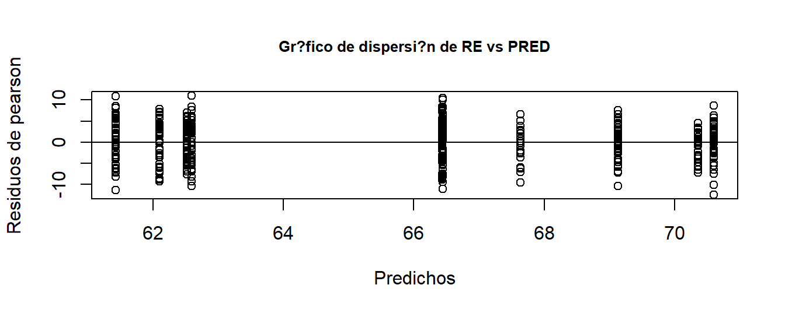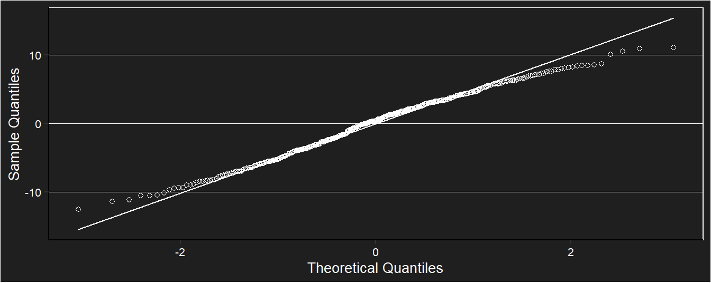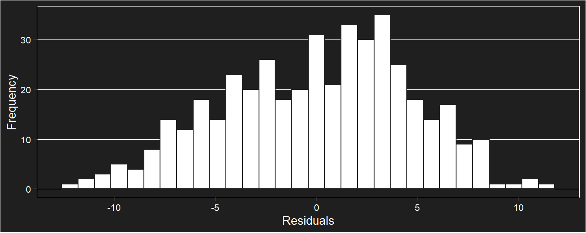
##
## Shapiro-Wilk normality test
##
## data: L_ajuste$residuos
## W = 0.9893, p-value = 0.00287Marginal covariance matrix
## Marginal variance covariance matrix
## [,1] [,2] [,3] [,4] [,5]
## [1,] 21.3650 14.9480 1.7303 8.8909 8.1131
## [2,] 14.9480 21.3650 2.5003 8.8632 6.4293
## [3,] 1.7303 2.5003 21.3650 7.4134 4.3699
## [4,] 8.8909 8.8632 7.4134 21.3650 11.9690
## [5,] 8.1131 6.4293 4.3699 11.9690 21.3650
## Standard Deviations: 4.6222 4.6222 4.6222 4.6222 4.6222Anova type III
## Analysis of Deviance Table (Type III tests)
##
## Response: L
## Df Chisq Pr(>Chisq)
## (Intercept) 1 9140.98 < 2e-16 ***
## TEMP 1 0.21 0.64707
## DIA 4 90.33 < 2e-16 ***
## TEMP:DIA 4 17.02 0.00191 **
## ---
## Signif. codes: 0 '***' 0.001 '**' 0.01 '*' 0.05 '.' 0.1 ' ' 1There is interaction Time * Temperature. Interaction comparisons are made and simple effects are analyzed.
Interaction comparisons
## contrast estimate SE df t.ratio p.value
## 5 0 - 9 0 0.42518 0.928677 415 0.458 1.0000
## 5 0 - 5 3 1.09562 0.510143 415 2.148 0.4949
## 5 0 - 9 3 -0.06649 0.925002 415 -0.072 1.0000
## 5 0 - 5 7 -6.61215 0.876779 415 -7.541 <.0001
## 5 0 - 9 7 -8.08388 0.920557 415 -8.781 <.0001
## 5 0 - 5 10 -3.92490 0.716769 415 -5.476 <.0001
## 5 0 - 9 10 -7.84025 1.059105 415 -7.403 <.0001
## 5 0 - 5 14 -3.91432 0.759998 415 -5.150 <.0001
## 5 0 - 9 14 -5.12196 1.116650 415 -4.587 0.0003
## 9 0 - 5 3 0.67044 0.924715 415 0.725 0.9993
## 9 0 - 9 3 -0.49167 0.515694 415 -0.953 0.9945
## 9 0 - 5 7 -7.03733 0.925105 415 -7.607 <.0001
## 9 0 - 9 7 -8.50905 0.877583 415 -9.696 <.0001
## 9 0 - 5 10 -4.35008 0.934225 415 -4.656 0.0002
## 9 0 - 9 10 -8.26543 0.885358 415 -9.336 <.0001
## 9 0 - 5 14 -4.33950 0.952861 415 -4.554 0.0003
## 9 0 - 9 14 -5.54714 0.969236 415 -5.723 <.0001
## 5 3 - 9 3 -1.16212 0.921024 415 -1.262 0.9614
## 5 3 - 5 7 -7.70777 0.852133 415 -9.045 <.0001
## 5 3 - 9 7 -9.17950 0.916561 415 -10.015 <.0001
## 5 3 - 5 10 -5.02053 0.713021 415 -7.041 <.0001
## 5 3 - 9 10 -8.93588 1.055633 415 -8.465 <.0001
## 5 3 - 5 14 -5.00994 0.797230 415 -6.284 <.0001
## 5 3 - 9 14 -6.21758 1.113358 415 -5.585 <.0001
## 9 3 - 5 7 -6.54566 0.921416 415 -7.104 <.0001
## 9 3 - 9 7 -8.01738 0.852837 415 -9.401 <.0001
## 9 3 - 5 10 -3.85841 0.930572 415 -4.146 0.0017
## 9 3 - 9 10 -7.77376 0.881978 415 -8.814 <.0001
## 9 3 - 5 14 -3.84783 0.949279 415 -4.053 0.0024
## 9 3 - 9 14 -5.05546 1.000580 415 -5.053 <.0001
## 5 7 - 9 7 -1.47173 0.916954 415 -1.605 0.8453
## 5 7 - 5 10 2.68725 0.749559 415 3.585 0.0137
## 5 7 - 9 10 -1.22810 1.055975 415 -1.163 0.9774
## 5 7 - 5 14 2.69783 0.844205 415 3.196 0.0479
## 5 7 - 9 14 1.49019 1.113682 415 1.338 0.9442
## 9 7 - 5 10 4.15897 0.926155 415 4.491 0.0004
## 9 7 - 9 10 0.24362 0.894576 415 0.272 1.0000
## 9 7 - 5 14 4.16956 0.944949 415 4.412 0.0005
## 9 7 - 9 14 2.96192 1.028894 415 2.879 0.1149
## 5 10 - 9 10 -3.91535 1.063974 415 -3.680 0.0098
## 5 10 - 5 14 0.01059 0.655258 415 0.016 1.0000
## 5 10 - 9 14 -1.19705 1.121269 415 -1.068 0.9875
## 9 10 - 5 14 3.92594 1.080374 415 3.634 0.0116
## 9 10 - 9 14 2.71830 0.891183 415 3.050 0.0728
## 5 14 - 9 14 -1.20764 1.136843 415 -1.062 0.9879
##
## Degrees-of-freedom method: df.error
## P value adjustment: tukey method for comparing a family of 10 estimatesGraph with standard error of the model for each treatment.
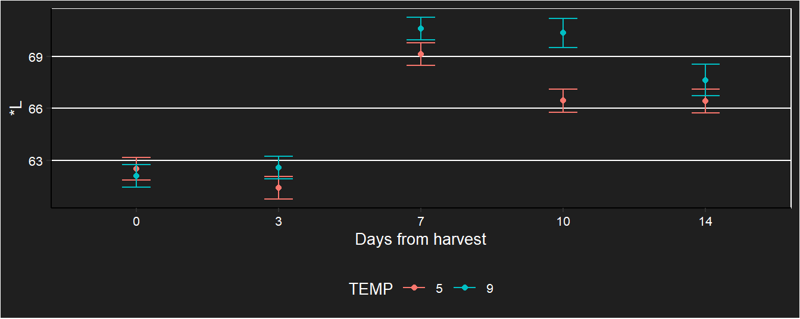
Simple effects
## DIA = 0:
## contrast estimate SE df t.ratio p.value
## 5 - 9 0.42518 0.928677 415 0.458 0.6473
##
## DIA = 3:
## contrast estimate SE df t.ratio p.value
## 5 - 9 -1.16212 0.921024 415 -1.262 0.2077
##
## DIA = 7:
## contrast estimate SE df t.ratio p.value
## 5 - 9 -1.47173 0.916954 415 -1.605 0.1093
##
## DIA = 10:
## contrast estimate SE df t.ratio p.value
## 5 - 9 -3.91535 1.063974 415 -3.680 0.0003
##
## DIA = 14:
## contrast estimate SE df t.ratio p.value
## 5 - 9 -1.20764 1.136843 415 -1.062 0.2887
##
## Degrees-of-freedom method: df.error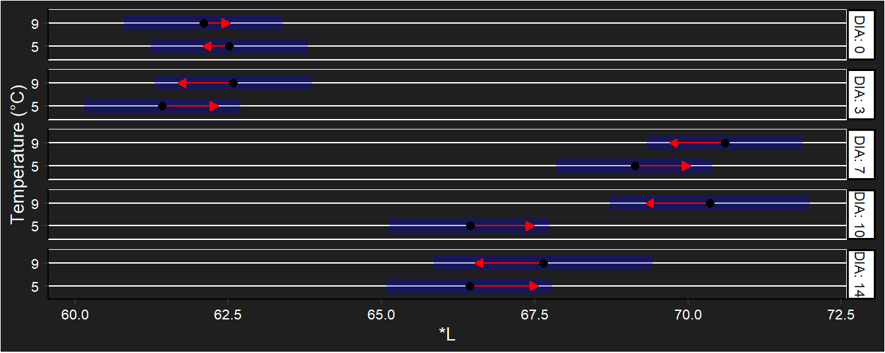
Conclusion *L
Only at 10 days there were significant differences between temperatures.
COLOR (*a)
Descriptive statistics *a
Boxplot
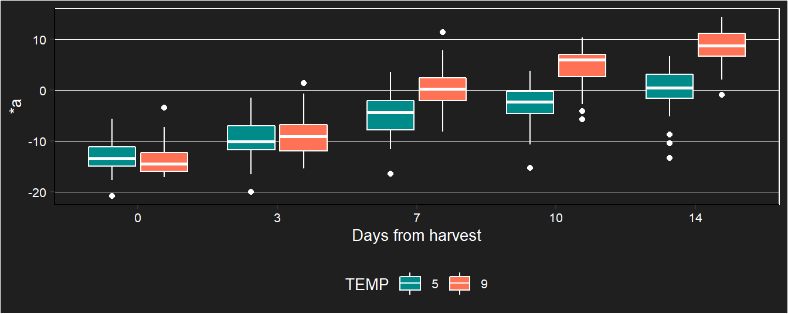
Graph with standard deviation
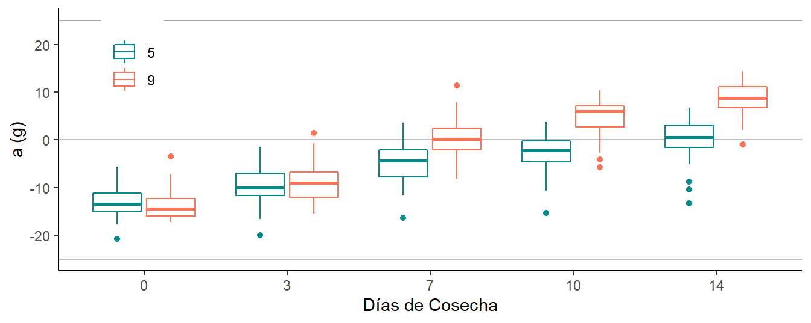
Profile chart
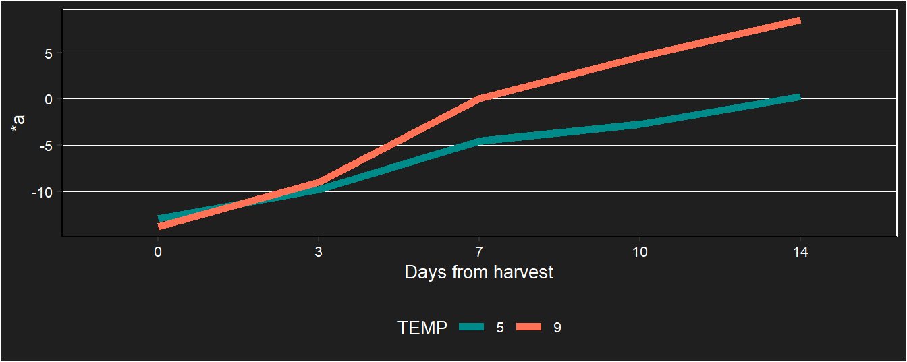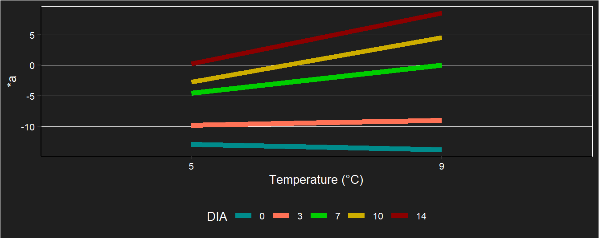
Behavior by fruit
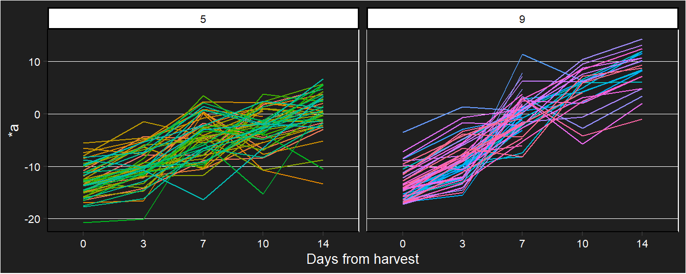
Inferential statistics *a
Correlation over time
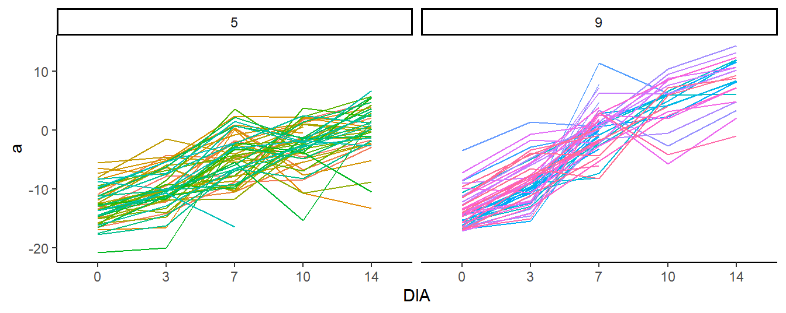
Selection of models by AIC
## df AIC
## m1a 12 2372.19
## m2a 16 2358.45
## m3a 12 2390.28
## m4a 16 2370.50
## m5a 21 2249.60The model m5a is the best in terms of AIC
Assumptions
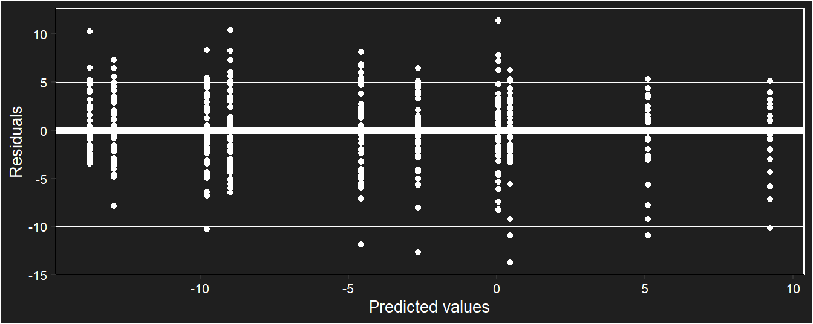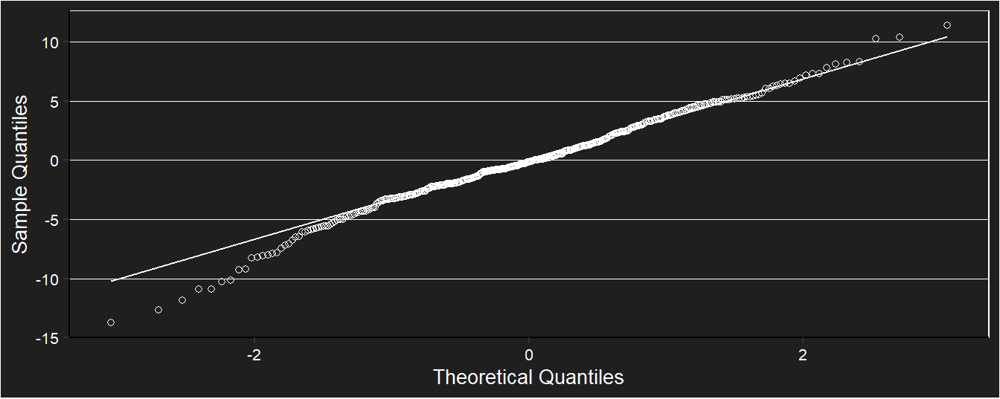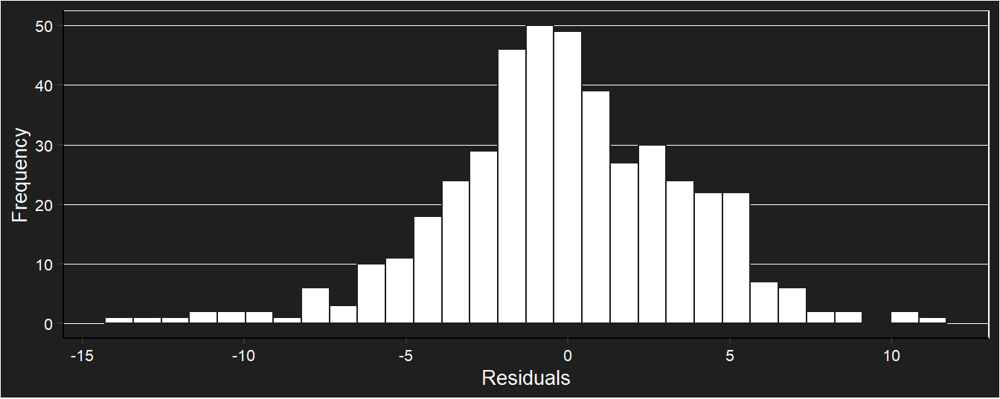
##
## Shapiro-Wilk normality test
##
## data: a_ajuste$residuos
## W = 0.9892, p-value = 0.00242Marginal covariance matrix
## Marginal variance covariance matrix
## [,1] [,2] [,3] [,4] [,5]
## [1,] 14.3240 12.22400 2.22070 4.3091 4.40050
## [2,] 12.2240 14.32400 0.90675 7.1619 6.85190
## [3,] 2.2207 0.90675 14.32400 -1.6500 -0.68112
## [4,] 4.3091 7.16190 -1.65000 14.3240 8.84850
## [5,] 4.4005 6.85190 -0.68112 8.8485 14.32400
## Standard Deviations: 3.7847 3.7847 3.7847 3.7847 3.7847Anova
## Analysis of Deviance Table (Type III tests)
##
## Response: a
## Df Chisq Pr(>Chisq)
## (Intercept) 1 582.219 <2e-16 ***
## TEMP 1 1.186 0.276
## DIA 4 460.486 <2e-16 ***
## TEMP:DIA 4 106.916 <2e-16 ***
## ---
## Signif. codes: 0 '***' 0.001 '**' 0.01 '*' 0.05 '.' 0.1 ' ' 1There is interaction Time * Temperature. Interaction comparisons are made and simple effects are analyzed.
Interaction comparisons
## DIA = 0:
## contrast estimate SE df t.ratio p.value
## 5 - 9 0.82422 0.756936 419 1.089 0.2768
##
## DIA = 3:
## contrast estimate SE df t.ratio p.value
## 5 - 9 -0.80382 0.756934 419 -1.062 0.2889
##
## DIA = 7:
## contrast estimate SE df t.ratio p.value
## 5 - 9 -4.61796 0.756911 419 -6.101 <.0001
##
## DIA = 10:
## contrast estimate SE df t.ratio p.value
## 5 - 9 -7.76166 0.872027 419 -8.901 <.0001
##
## DIA = 14:
## contrast estimate SE df t.ratio p.value
## 5 - 9 -8.78041 0.914006 419 -9.607 <.0001
##
## Degrees-of-freedom method: df.errorGraph with standard error of the model for each treatment.
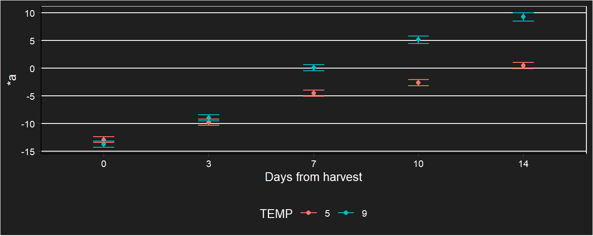
Simple effects
## DIA = 0:
## contrast estimate SE df t.ratio p.value
## 5 - 9 0.82422 0.756936 419 1.089 0.2768
##
## DIA = 3:
## contrast estimate SE df t.ratio p.value
## 5 - 9 -0.80382 0.756934 419 -1.062 0.2889
##
## DIA = 7:
## contrast estimate SE df t.ratio p.value
## 5 - 9 -4.61796 0.756911 419 -6.101 <.0001
##
## DIA = 10:
## contrast estimate SE df t.ratio p.value
## 5 - 9 -7.76166 0.872027 419 -8.901 <.0001
##
## DIA = 14:
## contrast estimate SE df t.ratio p.value
## 5 - 9 -8.78041 0.914006 419 -9.607 <.0001
##
## Degrees-of-freedom method: df.error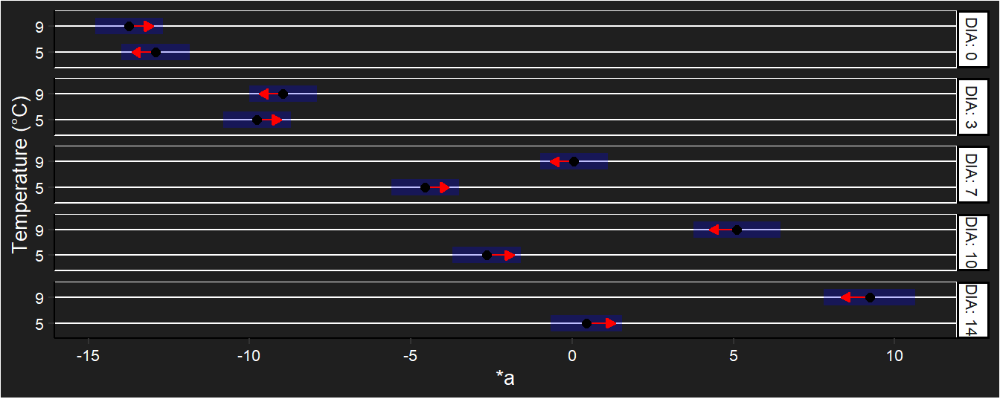
Conclusion *a
After 7 days there were significant differences between temperatures.
COLOR (*b)
Descriptive statistics *b
Boxplot
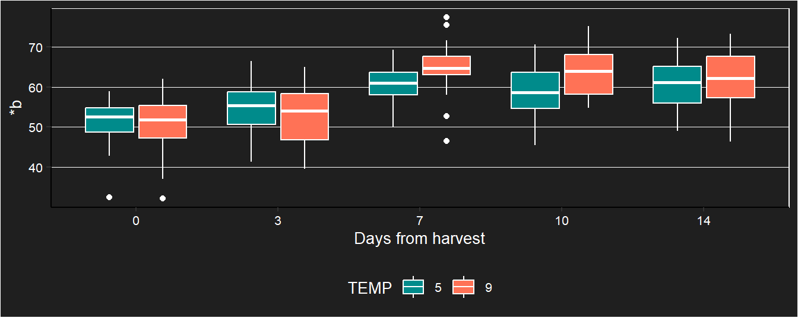
Graph with standard deviation
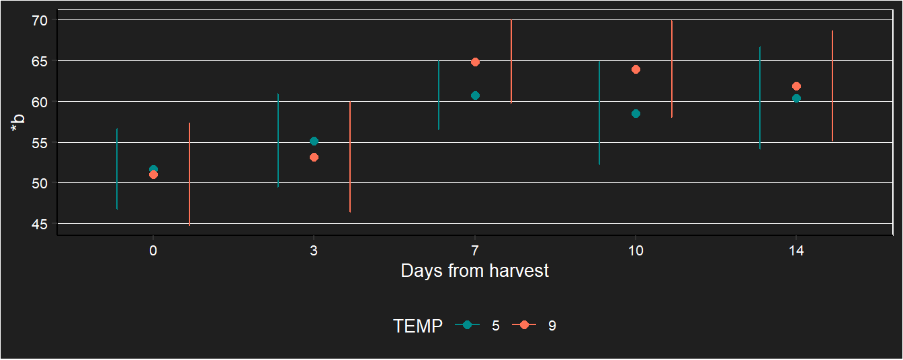
Profile chart
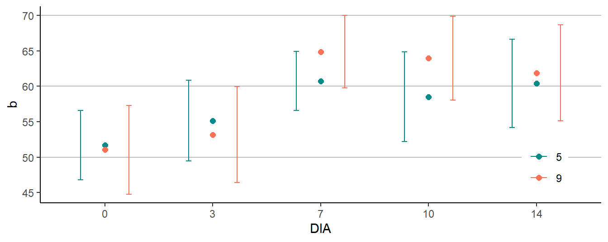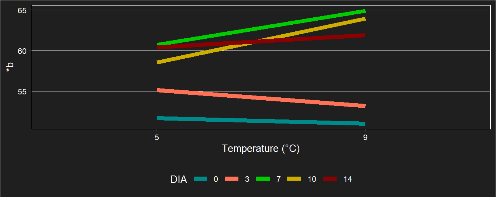
Behavior by fruit
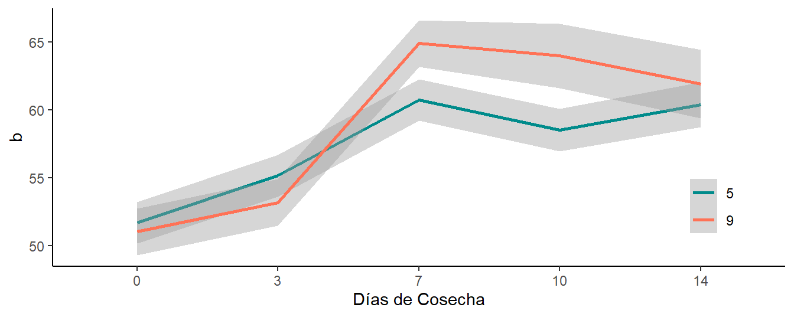
Inferential statistics *b
Correlation over time
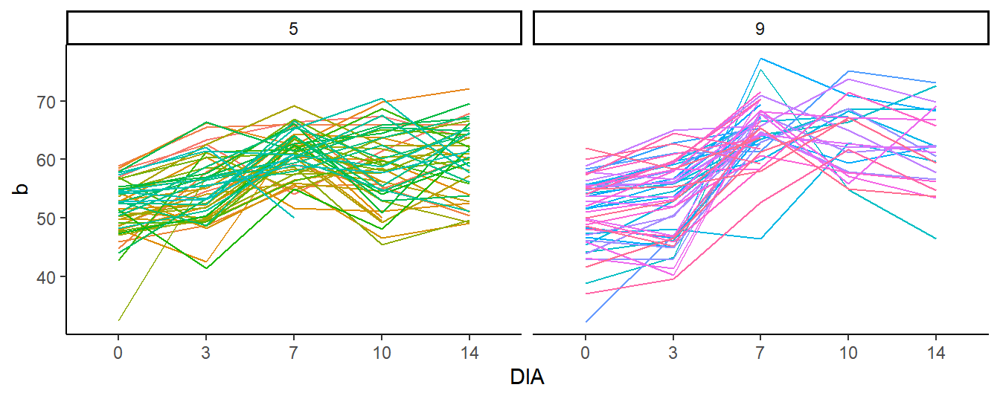
Selection of models by AIC
## df AIC
## m1b 12 2736.97
## m2b 16 2739.46
## m3b 12 2748.09
## m4b 16 2749.25
## m5b 21 2697.30The model m5b is the best in terms of AIC
Assumptions
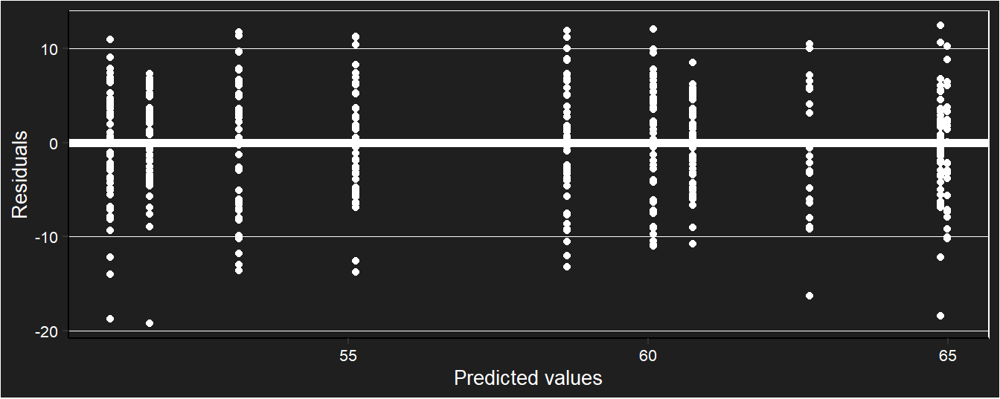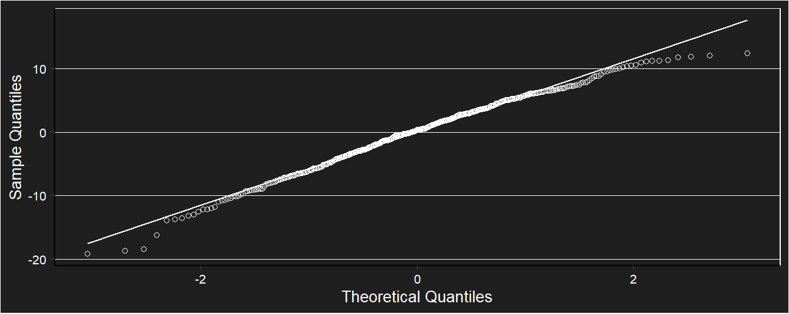
##
## Shapiro-Wilk normality test
##
## data: b_ajuste$residuos
## W = 0.9887, p-value = 0.00175Marginal covariance matrix
## Marginal variance covariance matrix
## [,1] [,2] [,3] [,4] [,5]
## [1,] 32.404 21.01400 -1.10200 13.18500 13.2830
## [2,] 21.014 32.40400 0.73093 13.61100 9.5937
## [3,] -1.102 0.73093 32.40400 0.23777 2.6330
## [4,] 13.185 13.61100 0.23777 32.40400 17.6790
## [5,] 13.283 9.59370 2.63300 17.67900 32.4040
## Standard Deviations: 5.6925 5.6925 5.6925 5.6925 5.6925Anova
## Analysis of Deviance Table (Type III tests)
##
## Response: b
## Df Chisq Pr(>Chisq)
## (Intercept) 1 4122.36 < 2e-16 ***
## TEMP 1 0.33 0.566
## DIA 4 109.19 < 2e-16 ***
## TEMP:DIA 4 40.52 3.38e-08 ***
## ---
## Signif. codes: 0 '***' 0.001 '**' 0.01 '*' 0.05 '.' 0.1 ' ' 1There is interaction Time * Temperature. Interaction comparisons are made and simple effects are analyzed.
Interaction comparisons
## DIA = 0:
## contrast estimate SE df t.ratio p.value
## 5 - 9 0.65412 1.13850 430 0.575 0.5659
##
## DIA = 3:
## contrast estimate SE df t.ratio p.value
## 5 - 9 1.95768 1.13839 430 1.720 0.0862
##
## DIA = 7:
## contrast estimate SE df t.ratio p.value
## 5 - 9 -4.13129 1.13846 430 -3.629 0.0003
##
## DIA = 10:
## contrast estimate SE df t.ratio p.value
## 5 - 9 -6.33643 1.33773 430 -4.737 <.0001
##
## DIA = 14:
## contrast estimate SE df t.ratio p.value
## 5 - 9 -2.59715 1.40126 430 -1.853 0.0645
##
## Degrees-of-freedom method: df.errorGraph with standard error of the model for each treatment.
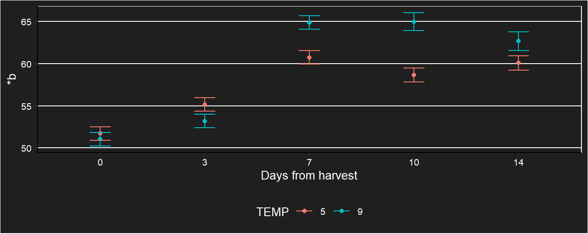
Simple effects
## DIA = 0:
## contrast estimate SE df t.ratio p.value
## 5 - 9 0.65412 1.13850 430 0.575 0.5659
##
## DIA = 3:
## contrast estimate SE df t.ratio p.value
## 5 - 9 1.95768 1.13839 430 1.720 0.0862
##
## DIA = 7:
## contrast estimate SE df t.ratio p.value
## 5 - 9 -4.13129 1.13846 430 -3.629 0.0003
##
## DIA = 10:
## contrast estimate SE df t.ratio p.value
## 5 - 9 -6.33643 1.33773 430 -4.737 <.0001
##
## DIA = 14:
## contrast estimate SE df t.ratio p.value
## 5 - 9 -2.59715 1.40126 430 -1.853 0.0645
##
## Degrees-of-freedom method: df.error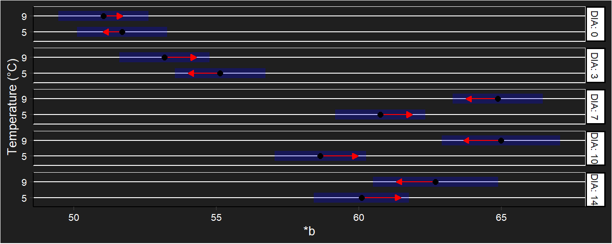 #### Conclusion *b At 7 and 10 days there were significant differences between temperatures.
Summary table
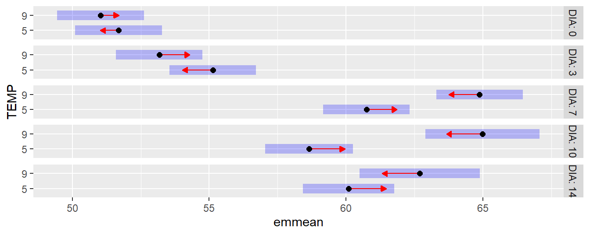
Fruit losses
Descriptive statistics
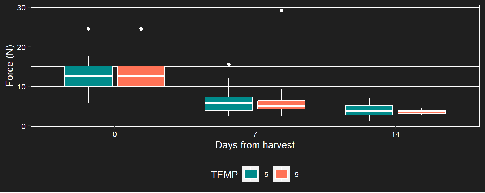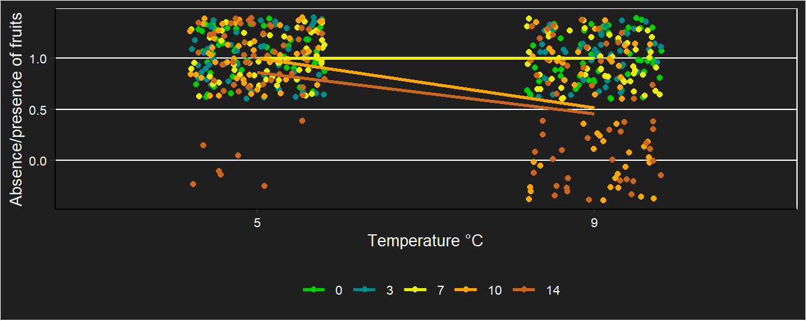
pH
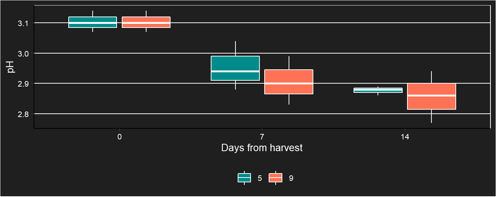
Model
## Call:
## aov(formula = pH ~ DIA * TEMP, data = datac)
##
## Terms:
## DIA TEMP DIA:TEMP Residuals
## Sum of Squares 0.1801333 0.0022222 0.0016444 0.0458000
## Deg. of Freedom 2 1 2 12
##
## Residual standard error: 0.0617792
## Estimated effects may be unbalancedAssumptions
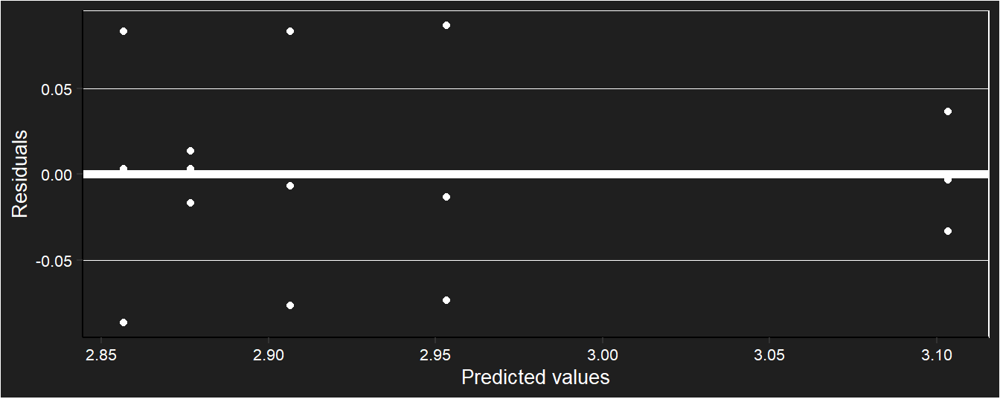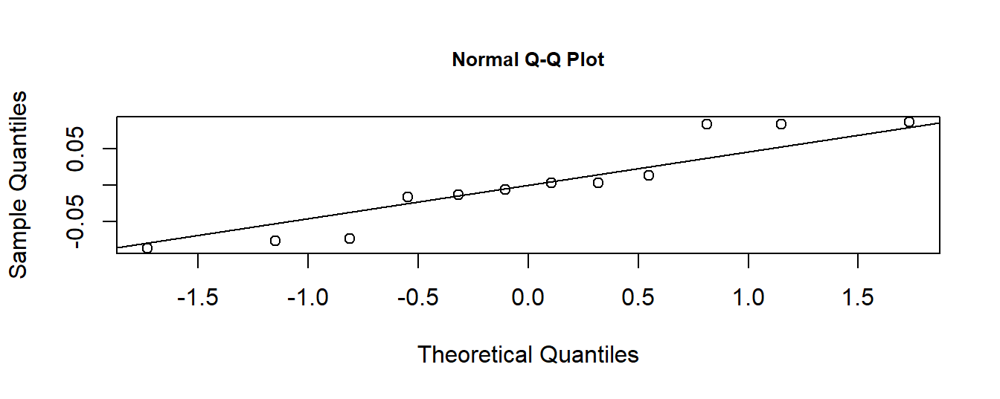
##
## Shapiro-Wilk normality test
##
## data: e
## W = 0.9398, p-value = 0.288## Levene's Test for Homogeneity of Variance (center = median)
## Df F value Pr(>F)
## group 5 0.891 0.517
## 12Anova
## Analysis of Variance Table
##
## Response: pH
## Df Sum Sq Mean Sq F value Pr(>F)
## DIA 2 0.18013 0.09007 23.598 6.94e-05 ***
## TEMP 1 0.00222 0.00222 0.582 0.460
## DIA:TEMP 2 0.00164 0.00082 0.215 0.809
## Residuals 12 0.04580 0.00382
## ---
## Signif. codes: 0 '***' 0.001 '**' 0.01 '*' 0.05 '.' 0.1 ' ' 1There is no evidence of interaction. Significant differences were only found between days.
Principal effects
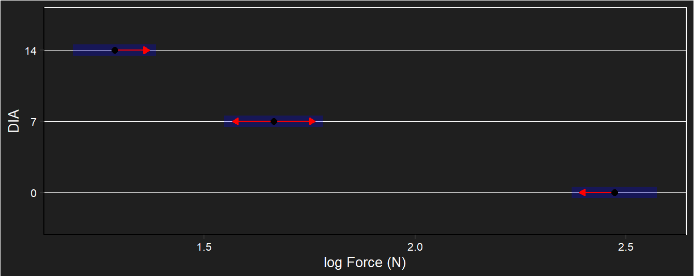
## contrast estimate SE df lower.CL upper.CL
## 0 - 7 0.1733333 0.0356682 12 0.0781754 0.268491
## 0 - 14 0.2366667 0.0356682 12 0.1415087 0.331825
## 7 - 14 0.0633333 0.0356682 12 -0.0318246 0.158491
##
## Results are averaged over the levels of: TEMP
## Confidence level used: 0.95
## Conf-level adjustment: tukey method for comparing a family of 3 estimatesDay zero was statistically different from the other days.
Soluble solids
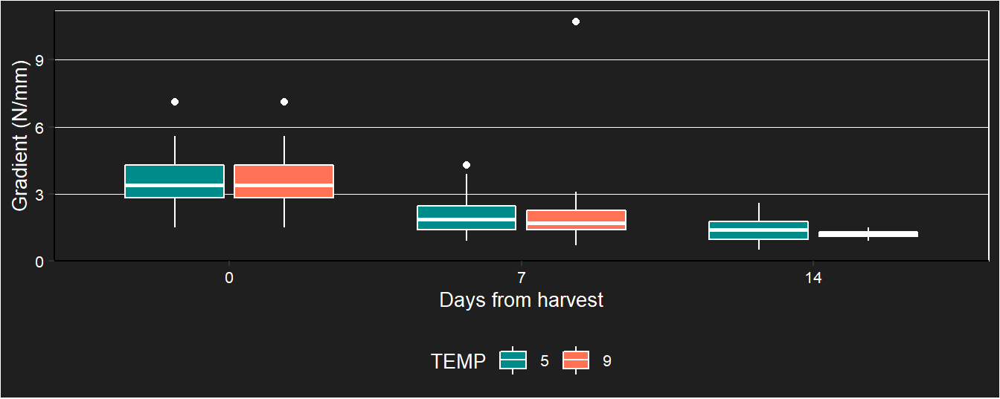
Model
## Call:
## aov(formula = SS ~ DIA * TEMP, data = datac)
##
## Terms:
## DIA TEMP DIA:TEMP Residuals
## Sum of Squares 1.83000 1.02722 0.81444 5.41333
## Deg. of Freedom 2 1 2 12
##
## Residual standard error: 0.671648
## Estimated effects may be unbalancedAssumptions

##
## Shapiro-Wilk normality test
##
## data: e
## W = 0.926, p-value = 0.165## Levene's Test for Homogeneity of Variance (center = median)
## Df F value Pr(>F)
## group 5 0.156 0.974
## 12Anova
## Analysis of Variance Table
##
## Response: SS
## Df Sum Sq Mean Sq F value Pr(>F)
## DIA 2 1.830 0.9150 2.028 0.174
## TEMP 1 1.027 1.0272 2.277 0.157
## DIA:TEMP 2 0.814 0.4072 0.903 0.431
## Residuals 12 5.413 0.4511No significant differences were found.
Total titratable acidity
Model
## Call:
## aov(formula = Ac ~ DIA * TEMP, data = data)
##
## Terms:
## DIA TEMP DIA:TEMP Residuals
## Sum of Squares 0.942535 0.000228 0.016839 1.815893
## Deg. of Freedom 2 1 2 12
##
## Residual standard error: 0.389004
## Estimated effects may be unbalancedAssumptions
##
## Shapiro-Wilk normality test
##
## data: e
## W = 0.9532, p-value = 0.477## Levene's Test for Homogeneity of Variance (center = median)
## Df F value Pr(>F)
## group 5 0.305 0.901
## 12Anova
## Analysis of Variance Table
##
## Response: Ac
## Df Sum Sq Mean Sq F value Pr(>F)
## DIA 2 0.9425 0.4713 3.114 0.0814 .
## TEMP 1 0.0002 0.0002 0.002 0.9697
## DIA:TEMP 2 0.0168 0.0084 0.056 0.9461
## Residuals 12 1.8159 0.1513
## ---
## Signif. codes: 0 '***' 0.001 '**' 0.01 '*' 0.05 '.' 0.1 ' ' 1No significant differences were found.
Summary table

Compression
Force (N)
Boxplot

Model
## df AIC
## m1FU 7 115.673
## m2FU 12 100.641
## m3FU 8 109.786
## m4FU 9 116.080Assumptions

##
## Shapiro-Wilk normality test
##
## data: e
## W = 0.9937, p-value = 0.861Anova
## Denom. DF: 117
## numDF F-value p-value
## (Intercept) 1 4702.23 <.0001
## DIA 2 211.16 <.0001
## TEMP 1 0.47 0.4932
## DIA:TEMP 2 0.41 0.6639No hay interacción. El factor DIA es significativo.
Efectos principales
## contrast estimate SE df lower.CL upper.CL
## 0 - 7 0.807598 0.0763980 74.06 0.624874 0.990321
## 0 - 14 1.184460 0.0691994 59.01 1.018089 1.350831
## 7 - 14 0.376862 0.0753606 69.16 0.196359 0.557365
##
## Results are averaged over the levels of: TEMP
## Degrees-of-freedom method: satterthwaite
## Results are given on the log (not the response) scale.
## Confidence level used: 0.95
## Conf-level adjustment: tukey method for comparing a family of 3 estimatesConclusion Fuerza
Sólo se encontró diferencia en el efecto principal para el factor tiempo.
Gradiente (N/mm)
Boxplot
Model
## df AIC
## m1GR 7 113.9740
## m2GR 12 99.2678
## m3GR 8 110.2879
## m4GR 9 115.2624Assumptions
##
## Shapiro-Wilk normality test
##
## data: e
## W = 0.9869, p-value = 0.305Anova
## Denom. DF: 113
## numDF F-value p-value
## (Intercept) 1 318.104 <.0001
## DIA 2 124.811 <.0001
## TEMP 1 0.786 0.3773
## DIA:TEMP 2 0.187 0.8298There is no interaction. The days factor is significant.
Principal effects
## contrast estimate SE df lower.CL upper.CL
## 0 - 7 0.579454 0.0804903 68.13 0.386600 0.772307
## 0 - 14 0.938485 0.0728063 53.77 0.763002 1.113968
## 7 - 14 0.359031 0.0755130 68.10 0.178102 0.539961
##
## Results are averaged over the levels of: TEMP
## Degrees-of-freedom method: appx-satterthwaite
## Results are given on the log (not the response) scale.
## Confidence level used: 0.95
## Conf-level adjustment: tukey method for comparing a family of 3 estimatesConclusion Gradient
A difference was only found in the main effect for day factor.
Distance F max (mm)
Boxplot
Model
## Call:
## aov(formula = DI ~ DIA * TEMP, data = data)
##
## Terms:
## DIA TEMP DIA:TEMP Residuals
## Sum of Squares 10.68699 0.00020 0.55652 11.12621
## Deg. of Freedom 2 1 2 113
##
## Residual standard error: 0.313787
## Estimated effects may be unbalancedAssumptions

##
## Shapiro-Wilk normality test
##
## data: e
## W = 0.9904, p-value = 0.58## Levene's Test for Homogeneity of Variance (center = median)
## Df F value Pr(>F)
## group 5 1.887 0.102
## 113Anova
## Analysis of Variance Table
##
## Response: DI
## Df Sum Sq Mean Sq F value Pr(>F)
## DIA 2 10.687 5.343 54.270 <2e-16 ***
## TEMP 1 0.000 0.000 0.002 0.9638
## DIA:TEMP 2 0.557 0.278 2.826 0.0634 .
## Residuals 113 11.126 0.098
## ---
## Signif. codes: 0 '***' 0.001 '**' 0.01 '*' 0.05 '.' 0.1 ' ' 1Non-significant interaction.
Principal effects
## contrast estimate SE df lower.CL upper.CL
## 0 - 7 0.656552 0.0743261 113 0.480028 0.833076
## 0 - 14 0.723271 0.0743268 113 0.546746 0.899797
## 7 - 14 0.066719 0.0669680 113 -0.092329 0.225768
##
## Results are averaged over the levels of: TEMP
## Confidence level used: 0.95
## Conf-level adjustment: tukey method for comparing a family of 3 estimatesConclusion Distance F max
A difference was only found in the main effect for day factor.
Summary table
Puncture
Respiration
A caption
Boxplot for CO2 emission for two stages of maturity in time.
CO2 emission for two stages of maturity in time. Shapes indicate different repetitions.
Correlation between the concentration of CO2 and O2 for mature and immature fruits.
Model
## Linear mixed-effects model fit by REML
## Data: resp
## Log-restricted-likelihood: -166.986
## Fixed: CO2 ~ MAD * TIME
## (Intercept) MADM TIME MADM:TIME
## 3.34586e+06 -4.60267e+06 -2.01955e-03 2.77822e-03
##
## Random effects:
## Formula: ~1 | REP
## (Intercept) Residual
## StdDev: 2.54817 13.5732
##
## Number of Observations: 40
## Number of Groups: 4Assumptions
##
## Shapiro-Wilk normality test
##
## data: e
## W = 0.9705, p-value = 0.373Assumptions are ok.
Anova
## numDF denDF F-value p-value
## (Intercept) 1 34 810.293 <.0001
## MAD 1 2 3.963 0.1848
## TIME 1 34 0.581 0.4514
## MAD:TIME 1 34 2.811 0.1028There is no interaction or significant differences.
Conclusion for respiration
There is no convincing evidence in this essay to affirm that the fruit of the ubajay is climacteric.